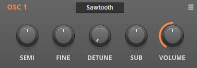
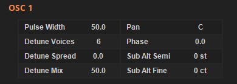
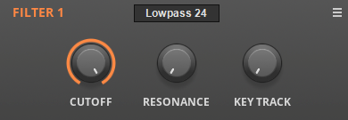
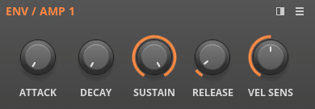
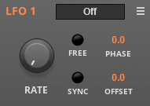

The Central Panel¶
Deducktion features a versatile signal flow. Sounds originate in the two oscillators before being passed through the filters and on to the amplifiers after which the sound is sent to the host. In addition to these signal processing elements there are modulators and other controls which shape the sound as it passes thought the synthesizer. All of these elements are controlled by sections found within the central panel.
Oscillators¶
The two oscillators in Reducktion are identical and include the following parameters:
Type Menu - set the oscillator waveform (see below).
Semi - set the semitone tuning from -24 st to + 24 st.
Fine - set the fine tuning from -100 ct to +100 ct.
Detune - set the detuning of the unison voices from 0 to 100.
Sub - set the level of the sub-oscillator (see below).
Volume - set the volume level of the oscillator.
The type menu offers the following choices of waveform: sawtooth, square, triangle, sine, white noise, pink noise, chime and organ. By default the square option provides a standard square wave; use the pulse width option to produce a pulse wave.
All oscillator selections can be detuned to take advantage of Deducktion’s ‘unison’ voicing feature. When an oscillator is detuned up to 6 extra oscillators are added to the voice with slightly different tunings to create a thicker and more dynamic sound.
In addition to the parameters described here, additional oscillator controls are available in the lower panel Osc section:
Pan - set the stereo pan position of the oscillator.
Phase - set the starting phase of the oscillator from 0 to 100%. Set to maximum for random phase.
Pulse Width - set the pulse width of the square waveform from 0 to 100%.
Detune Voices - set the number of extra oscillators added by the unison effect.
Detune Spread - set the stereo separation of the additional unison voices.
Detune Mix - set the level of the additional voices relative to the main oscillator.
Note phase only affects the sub oscillator when in default mode. In alt mode the phase remains fixed allowing the main oscillator phase to be changed relative to the sub.
Sub Oscillators¶
The Sub control of each oscillator section provides a number of different output options.
It is a bipolar control and increases the volume of the output from 0 at the 12 o’clock position to maximum in either direction. The actual waveform produced depends on the direction turned. By default clockwise produces a square wave while anti-clockwise produces a triangle wave.
Alternatively the sub oscillator can be switched to alt mode allowing it to operate as a second, independent oscillator within the oscillator section.
Alt mode is enabled via the oscillator section menu which includes the following options for the sub:
Sub: Follow Osc PW - make the square sub-oscillator follow the pulse width of the main oscillator. Turning this off sets the square sub-oscillator to 50% pulse width at all times.
Sub: Follow Osc Vol - make the sub oscillator volume follow the volume of the main oscillator. With this on the sub is always relative to the main oscillator. Turning it off allows it to play independently.
Sub Alt Mode: Off - turn alt mode off, restoring the default triangle/square options with a -1 octave tuning.
Sub Alt Mode: Sawtooth / Square - activate alt mode by replacing the default waves with sawtooth and square with the former in the anti-clockwise direction and the latter in the clockwise direction.
Sub Alt Mode: Triangle / Sine - activate alt mode by replacing the default waves with triangle and sine with the former in the anti-clockwise direction and the latter in the clockwise direction.
Sub Alt Mode: White / Pink -activate alt mode by replacing the default waves with white and pink noise with the former in the anti-clockwise direction and the latter in the clockwise direction.
Sub Alt Mode: Chime / Organ - activate alt mode by replacing the default waves with chime and organ with the former in the anti-clockwise direction and the latter in the clockwise direction.
In addition to selecting the waveform combination, alt mode will also override the sub-oscillator tuning. By default (i.e. alt mode off) the sub will follow the tuning of the main oscillator but one octave down. In alt mode the sub will be tuned based on the note being played and the following modifications from the lower panel Osc section:
Alt Semi - set the oscillator tuning from -24 st to +24 st.
Alt Fine - set the oscillator tuning from -100 ct to +100 ct.
Filters¶
Deducktion provides two identical filters which include the following parameters:
Type Menu - set the filter type to 24 dB/Oct Lowpass, 12 dB/oct Lowpass, Highpass, Bandpass, Bandstop (notch) or Peaking.
Cutoff - the filter cutoff frequency.
Resonance - the filter resonance level. The LP24 filter will self-oscillate with a high enough resonance setting.
Key Track - the keyboard tracking amount. This enables the cutoff frequency to be adjusted according to the note being played. Set to 100 to make the cutoff follow the note; lower values will cause the cutoff to ‘close down’ as the higher notes are played.
Note: the frequency readout on the cutoff frequency control is only accurate when key tracking is set to zero. With tracking enabled the actual frequency will differ depending on the note being played. In such cases the parameter will be displayed in percent.
The order in which the filters appear in the signal flow depends on the routing selected. This is defined in the lower panel Play section. See elsewhere in this guide for more information.
Envelopes¶
Deducktion provides four ADSR envelopes. Envelopes 1 and 2 are reserved for controlling amplitude levels in the different routing options available but all four can be used for any modulation task. They include the following parameters:
Attack - the attack time from 1 ms to 20 sec.
Decay - the decay time from 1 ms to 20 sec.
Sustain - the sustain level from 0 to 100.
Release - the release time from 1 ms to 20 sec.
Vel Sens - the velocity sensitivity from 0, where velocity has no effect and the envelope provides the maximum output level, to 100 where the velocity completely controls the output level.
LFOs¶
Deducktion provides four low-frequency oscillators which include the following parameters:
Type Menu - set the waveform generated to Sine, Triangle, Square, Sawtooth or Random. The random setting generates a new amplitude value on each cycle.
Rate - set the rate of oscillation in Hz (0.01 to 50) or a host tempo-based rate (8/1 to 1/32T).
Free - set free-running mode where the LFO becomes a global oscillator shared across all the active voices so that each is modulated in sync.
Sync - switch between a time or tempo-based rate.
Phase - set the starting phase of the wave. Use this to invert the waves or alter the starting modulation level (e.g. make a triangle start at its peak value.)
Offset - set the amount by which the output is offset. By default the LFOs generate a modulation signal from -50 to +50. The Offset parameter allows this to be shifted by up to +/- 50 allowing modulation ranges between -100 to 0 and 0 to +100. See the modulation matrix section for more information about the modulation system